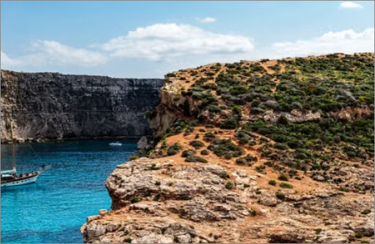

Lampedusa
Lampedusa è un’isola appartenente all’arcipelago delle isole Pelagie, in Sicilia. E’ l'isola più estesa dell'arcipelago delle isole Pelagie nel Mar Mediterraneo, nonché la più meridionale dell’Europa.Fa parte del comunedi Lampedusa e Linosa, di cui è la sede municipale.

- Geologia
- Calcarea e pianeggiante, fa parte della placca continentale africana.
- Aria protetta
- AMP Isole Pelagie / Riserva Lampedusa.
- Ente gestore
- Comune di Lampedusa e Linosa
Habitat tutelato
Il paesaggio è dominato da profondi valloni, come il Vallone della Forbice, Tabaccara e Cala Galera, che scendono verso il mare, interrompendo la natura calcarea e brulla dell'altopiano. Una specie protetta che vive sulle sue coste è la tartaruga marina Caretta caretta, balenottere.
Regole che lo tutelano
L'accesso alla celebre Spiaggia dei Conigli è a numero chiuso ed è regolamentato con un tetto massimo di visitatori giornalieri. Inoltre la spiaggia è interdetta la notte.
